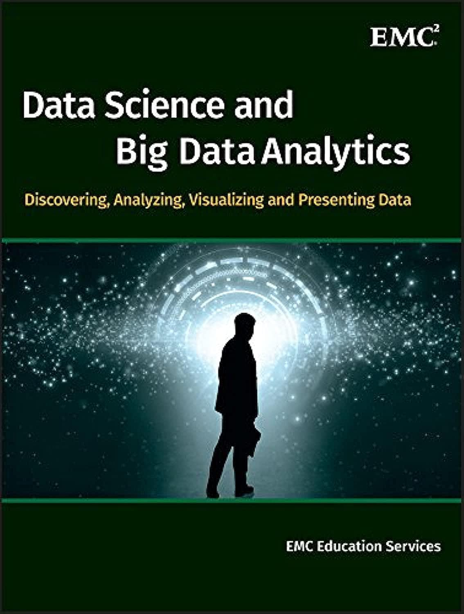
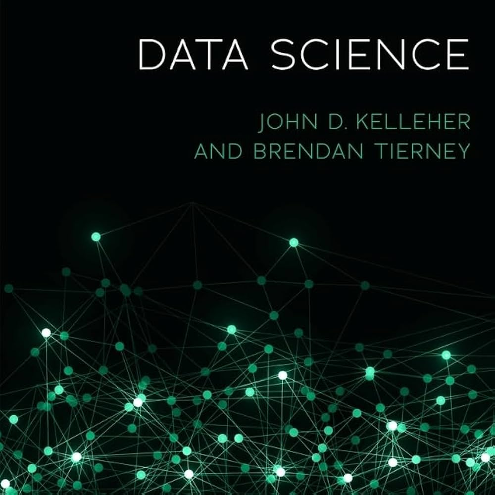

Assessments include graded homework, quizzes, projects, and a final examination.
| Type | Number | % Value |
|---|---|---|
| Exam | 1 | 100 |


Understanding the definition of data science and exploring the rich ecosystem of tools that drive modern analytics.
An interdisciplinary field that uses algorithms, procedures, and processes to examine large amounts of data to uncover hidden patterns and generate insights.
To create prediction models, data scientists use advanced machine learning algorithms to sort through, organize and learn from structured and unstructured data.
To guide decision making and strategic planning through the analysis of large data sets.
As a field of activity, data science includes a set of principles, algorithms, and processes for extracting hidden and useful patterns from big data sets.
It is closely related to the fields of data mining and machine learning.
Characterized by the 3Vs:
In recent times, Python has become the most popular programming language in the industry. It is essential for roles like Data Analyst, Data Scientist, and ML Engineer.
Java is a strongly-typed, object-oriented language that remains a cornerstone for enterprise-level data architecture and data engineering.
Building robust, large-scale ETL (Extract, Transform, Load) pipelines and integrating machine learning models into massive, pre-existing corporate software systems.
SQL is the absolute bedrock of data retrieval. Before you can analyze data with Python or build models with Java, you must extract it from relational databases.
SAS is a specialized, proprietary software suite developed for advanced analytics, multivariate analysis, business intelligence, and predictive modeling.
Heavily relied upon in highly regulated industries like Healthcare, Clinical Trials, and Finance.
Offers unparalleled data governance, security, and regulatory compliance reporting right out of the box.
Provides both a robust, click-and-drag GUI for analysts and a specialized programming language for complex manipulation.
Big Data frameworks are designed to process, store, and analyze massive datasets that traditional databases cannot handle on a single machine.
The original big data pioneer.
The modern, lightning-fast standard.
When classical Machine Learning isn't enough, we turn to Deep Learning frameworks to build and train complex Artificial Neural Networks.
The industry dominant framework for production environments and mobile model deployments (TF Lite).
Highly popular in research and academia due to its flexible, dynamic computation graph ("Pythonic" feel).
Used to model highly non-linear relationships like Image Recognition, Natural Language Processing, and Generative AI.
Controlling data gives one the power to influence decision-making. Actionable insights can be generated using exploratory data analysis and complex algorithms. With an explosion of data availability, we see data being captured in multiple forms from various domains.
Today, numerous fields are associated with Machine Learning and Artificial Intelligence:
Click nodes to select topics for discussion:
Note: Diving deep into these topics requires programming, logic building, and basic statistics.
The term "data science" (originally used interchangeably with “datalogy") has existed for over thirty years.
The term was used initially as a substitute for computer science by Peter Naur.
For the first time, the term data science is included in the title of a conference ("Data Science, Classification, and Related methods").
C.F. Jeff Wu gave the inaugural lecture entitled "Statistics = Data Science?" for his appointment to the H. C. Carver Professorship at the University of Michigan.
In his conclusion, he initiated the modern usage of the term and advocated that statistics be renamed data science and statisticians be called data scientists.
William S. Cleveland introduced data science as an independent discipline.
He extended the field of statistics to incorporate "advances in computing with data" in his article "Data Science: An Action Plan for Expanding the Technical Areas of the Field of Statistics."
The International Council for Science: Committee on Data for Science and Technology (CODATA) started the Data Science Journal.
It focused on issues such as the description of data systems, their publication on the internet, applications, and legal issues.
The Harvard Business Review published the famous article: "Data Scientist: The Sexiest Job of the 21st Century".
It asserted that a data scientist is "a new breed", and that a shortage of data scientists is becoming a serious constraint in some sectors.
Click on the cards to reveal the full forms of these data science abbreviations!
Exploring the essential hard and soft skills required to succeed in the modern data science ecosystem.
A Data Scientist requires skills basically from three major areas:
Statistical Research
Data Processing
Machine Learning
As you can see, you need to acquire various hard skills and soft skills to be successful.
Why do we need this specific combination of abilities?
Despite all the advanced mathematics and complex algorithms, there is one core skill every data scientist relies on daily.
@OneDevloperArmy
If you are a new programmer I just want you to know
me and all of my colleagues with years of experience
Google the most basic things daily
Understanding Raw Data, Processed Information, and the classification of gathered data types.
Data that has not been processed for use. It is measured and collected directly from machines, the web, etc., and is usually not in a format ready for analysis.
Data that has undergone cleaning and transformation. It is converted from raw data into a format that can be easily analyzed and visualized.
A Point-of-Sale terminal collects huge volumes of raw data daily, but it yields no information until processed.
How do we classify the raw data we collect from various sources?
Click to reveal definition
Data gathered through direct observation.
Example: Filling out forms or conducting manual surveys.
Click to reveal definition
A by-product of a process whose primary purpose is something else.
Example: Social media usage metadata (e.g., data that describes a phone call, not the call itself).
Data that captures the details of an event or exchange as it occurs.
Static or characteristic data that describes an entity rather than an event.
Exploring rectangular data, the structured-to-unstructured spectrum, and defining professional roles.
Rectangular data is a two-dimensional matrix where rows indicate records (cases) and columns indicate features (variables).
Data doesn't always start in this form. Unstructured data (like text) must be processed and manipulated so it can be represented as a set of features.
| ID | T | do | not | like | shopping |
|---|---|---|---|---|---|
| 1 | 1 | 0 | 0 | 1 | 1 |
| 2 | 1 | 1 | 1 | 1 | 1 |
Databases
XML / JSON / Email
Audio, Video, Web, NLP
of Enterprise Data (Gartner)
of Enterprise Data (Gartner)
While they overlap, they serve fundamentally different purposes regarding the timeline of data.
A Data Analyst usually explains what is going on by processing the history of the data.
A Data Scientist does EDA, but also uses advanced algorithms to identify future occurrences.
Test your knowledge! Click the correct classification for each data example.
Collected from web scraping and security cameras.
Captures the exact time, amount, and location of an exchange.
Data formatted perfectly into rows and columns.
A user's age, gender, and home address saved in a profile.
Assign the correct professional role to each of the following tasks.
Uses advanced Machine Learning algorithms to predict future occurrences and build models.
Processes historical data to explain what has happened and what is currently going on.
Focuses heavily on business rules, generating reports, and tracking KPIs.
Looks at data from entirely new angles to engineer and deploy net-new data products.
While closely related, these two fields serve fundamentally different purposes.
Focuses on finding meaningful correlations between large datasets.
Designed to uncover the specifics of extracted insights.
Intermediate Statistics & Problem Solving
Math, Advanced Stats, Predictive Modelling, ML
BI refers to the technologies, applications, strategies, and practices used to collect, integrate, analyze, and present business information. The goal of BI is to support better business decision making by transforming data into actionable insights.
The field is continually evolving by embracing new technologies:
The future will be more automated, intuitive, and embedded into daily business operations.
BI is not a specific role; it's a discipline. Here are the specific career paths within the BI ecosystem:
Click to reveal responsibilities
Analyzes data using BI tools to provide insights and recommendations. Often creates reports and dashboards for stakeholders.
Click to reveal responsibilities
Focuses on designing and developing BI solutions, such as data warehouses, ETL processes, and data visualization dashboards.
Click to reveal responsibilities
Works with organizations to develop BI strategies, choose tools, and implement solutions to meet business needs.
Click to reveal responsibilities
Oversees BI strategy, implementation, and operations. Manages BI projects/teams, ensuring alignment with objectives.
Click to reveal responsibilities
While not exclusively BI roles, they work closely with BI tools and processes to analyze data and generate actionable insights.
Note: All roles require a mix of technical skills and business acumen.
Understanding the differences and synergies between these two pivotal disciplines to effectively harness data for competitive advantage.
While both play critical roles in a data-driven organization, they focus on different ends of the spectrum.
Looking Backward
Centered around analyzing past and present data to inform business decisions.
Looking Forward
Focused on extracting knowledge to forecast future events and uncover hidden patterns.
Click the cards below to reveal the technological and human requirements for each discipline.
Aggregation & Reporting
Communication & Analysis
Programming & Machine Learning
Math & Advanced Algorithms
Measuring performance against business goals, financial reporting, market analysis, and optimizing operational efficiency.
Developing AI models for customer behavior prediction, building fraud detection algorithms, or optimizing supply chains.
While distinct, they are increasingly integrated in modern organizations.
Why the demand for data professionals is growing exponentially and how the field is evolving.
Data is generated by everyone on a daily basis, with and without our notice.
Businesses regularly collect transaction and website data, but face a common challenge: analyzing and categorizing it.
Rising awareness about data breaches has made the public cautious about sharing data. Companies can no longer afford to be careless.
Career areas without growth potential run the risk of stagnating. Data science is undergoing rapid developments.
Exploring the diverse domains where Data Science is leaving a massive footprint and solving complex problems.
Data science revolutionizes how we manage wealth and human health.
The earliest application of data science. Finance companies were fed up with bad debts and losses.
Every human body generates ~2 Terabytes of data per day (brain activity, heart rate, etc.).
It traditionally takes 12 years and billions of dollars to submit a new drug.
From the moment you open a browser, Data Science algorithms are shaping your digital life.
Click to reveal
Search engines like Google, Bing, and Yahoo use algorithms to deliver the best results in a fraction of a second.
Scale: Google processes more than 20 petabytes of data every single day.
Click to reveal
The entire digital marketing spectrum is driven by DS.
Yields much higher Call-Through Rates (CTR) than traditional ads because banners are targeted specifically based on a user's past behavior.
Click to reveal
Ever noticed suggestions about "similar products" on Amazon?
Algorithms help you find relevant items out of billions of possibilities, drastically improving User Experience and sales.
Companies use data to dynamically adjust prices, optimize routes, and carry out preemptive maintenance.
The increase in online transactions has led to a spike in fraudulent activities and cyber threats.
Exploring the massive growth of enterprise data, the shift to automated analysis, and strategies to manage the overflow.
Companies in almost every industry are now focused on exploiting data for competitive advantage.
Firms employed teams to explore datasets manually. But the volume and variety of data have far outstripped manual capacity.
Computers are powerful, networking is ubiquitous, and algorithms connect datasets to enable broader, deeper analyses.
When the amount of new data generated surpasses the limit of institutions to manage it, making it difficult for analysts to deduce useful conclusions.
Vast amounts of data will drive better business decisions, but only if you have a comprehensive management plan in place.
Enterprise Data Growth Per Year (IDC)
Discuss potential strategies before revealing the answers.
Before analyzing data, we must fix how it is stored and shared across the organization's infrastructure.
Infrastructure is useless without a team that champions data accessibility and strict governance.
Designing the systems to manage data and defining the specific professionals required to utilize them.
An umbrella term for the systems, protocols, and technology used to collect, store, and analyze data streams.
Data analytics is becoming a central part of operations for every organization.
The fast-rising amount of data collected from multiple touchpoints means that using a simple spreadsheet is quickly becoming unfeasible.
Organizations must choose how to structure their data and how users will interact with it.
A highly structured approach. Data is cleaned, categorized, and easily sorted for specific, reliable access later.
A vast pool of raw data, the purpose for which is not yet defined. Highly flexible but requires more management to prevent a "data swamp."
Implementing Natural Language Processing (NLP) and ad-hoc analytics capabilities to reduce reliance on specialized workers.
First, we build the infrastructure. Then, we interpret the historical trends to understand our current business.
Objective:
Ensure data flows smoothly from source to database to analytics without loss. They create the foundation.
Objective:
Provide actionable insights to other departments to inform current business strategies.
A BA plays a crucial role in bridging the gap between IT and the Business side.
Their work is less technical and highly focused on the business implications of data. They apply data findings to solve specific challenges rather than just interpreting the math. They are the translation layer between business requirements and technical specifications.